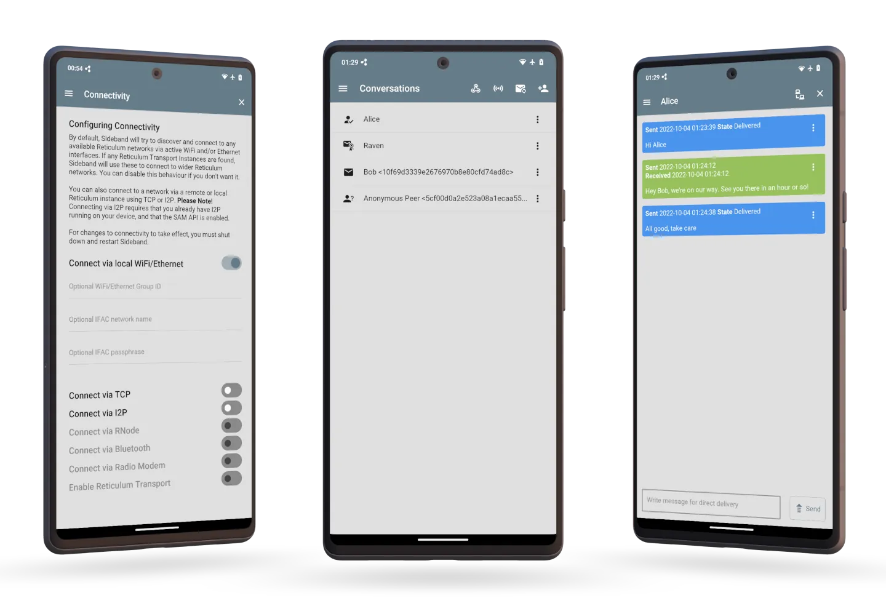
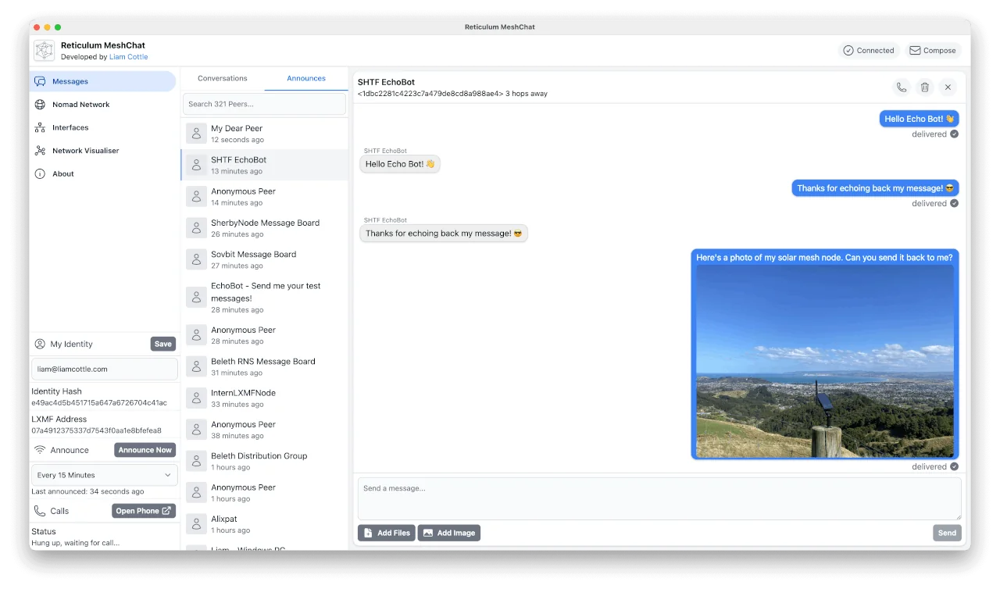

Getting Started Fast#
The best way to get started with the Reticulum Network Stack depends on what you want to do. This guide will outline sensible starting paths for different scenarios.
Standalone Reticulum Installation#
If you simply want to install Reticulum and related utilities on a system,
the easiest way is via the pip package manager:
pip install rns
If you do not already have pip installed, you can install it using the package manager
of your system with a command like sudo apt install python3-pip,
sudo pamac install python-pip or similar.
You can also dowload the Reticulum release wheels from GitHub, or other release channels,
and install them offline using pip:
pip install ./rns-0.5.1-py3-none-any.whl
Resolving Dependency & Installation Issues#
On some platforms, there may not be binary packages available for all dependencies, and
pip installation may fail with an error message. In these cases, the issue can usually
be resolved by installing the development essentials packages for your platform:
# Debian / Ubuntu / Derivatives
sudo apt install build-essential
# Arch / Manjaro / Derivatives
sudo pamac install base-devel
# Fedora
sudo dnf groupinstall "Development Tools" "Development Libraries"
With the base development packages installed, pip should be able to compile any missing
dependencies from source, and complete installation even on platforms that don’t have pre-
compiled packages available.
Try Using a Reticulum-based Program#
If you simply want to try using a program built with Reticulum, a few different programs exist that allow basic communication and a range of other useful functions, even over extremely low-bandwidth Reticulum networks.
These programs will let you get a feel for how Reticulum works. They have been designed to run well over networks based on LoRa or packet radio, but can also be used over fast links, such as local WiFi, wired Ethernet, the Internet, or any combination.
As such, it is easy to get started experimenting, without having to set up any radio transceivers or infrastructure just to try it out. Launching the programs on separate devices connected to the same WiFi network is enough to get started, and physical radio interfaces can then be added later.
Remote Shell#
The rnsh program lets you establish fully interactive
remote shell sessions over Reticulum. It also allows you to pipe any program to or from a
remote system, and is similar to how ssh works. The rnsh is very efficient, and
can facilitate fully interactive shell sessions, even over extremely low-bandwidth links,
such as LoRa or packet radio.
Nomad Network#
The terminal-based program Nomad Network provides a complete encrypted communications suite built with Reticulum. It features encrypted messaging (both direct and delayed-delivery for offline users), file sharing, and has a built-in text-browser and page server with support for dynamically rendered pages, user authentication and more.

Nomad Network is a user-facing client for the messaging and information-sharing protocol LXMF, another project built with Reticulum.
You can install Nomad Network via pip:
# Install ...
pip install nomadnet
# ... and run
nomadnet
Please Note: If this is the very first time you use pip to install a program on your system, you might need to reboot your system for your program to become available. If you get a “command not found” error or similar when running the program, reboot your system and try again.
Sideband#
If you would rather use a program with a graphical user interface, you can take a look at Sideband, which is available for Android, Linux, macOS and Windows.
{kind=link}
Sideband allows you to communicate with other people or LXMF-compatible systems over Reticulum networks using LoRa, Packet Radio, WiFi, I2P, Encrypted QR Paper Messages, or anything else Reticulum supports. It also interoperates with the Nomad Network program.
MeshChat#
The Reticulum MeshChat application is a user-friendly LXMF client for macOS and Windows, that also includes voice call functionality, and a range of other interesting functions.
{kind=link}
Reticulum MeshChat is of course also compatible with Sideband and Nomad Network, or any other LXMF client.
Using the Included Utilities#
Reticulum comes with a range of included utilities that make it easier to manage your network, check connectivity and make Reticulum available to other programs on your system.
You can use rnsd to run Reticulum as a background or foreground service,
and the rnstatus, rnpath and rnprobe utilities to view and query
network status and connectivity.
To learn more about these utility programs, have a look at the Using Reticulum on Your System chapter of this manual.
Creating a Network With Reticulum#
To create a network, you will need to specify one or more interfaces for
Reticulum to use. This is done in the Reticulum configuration file, which by
default is located at ~/.reticulum/config. You can get an example
configuration file with all options via rnsd --exampleconfig.
When Reticulum is started for the first time, it will create a default configuration file, with one active interface. This default interface uses your existing Ethernet and WiFi networks (if any), and only allows you to communicate with other Reticulum peers within your local broadcast domains.
To communicate further, you will have to add one or more interfaces. The default configuration includes a number of examples, ranging from using TCP over the internet, to LoRa and Packet Radio interfaces.
With Reticulum, you only need to configure what interfaces you want to communicate over. There is no need to configure address spaces, subnets, routing tables, or other things you might be used to from other network types.
Once Reticulum knows which interfaces it should use, it will automatically discover topography and configure transport of data to any destinations it knows about.
In situations where you already have an established WiFi or Ethernet network, and many devices that want to utilise the same external Reticulum network paths (for example over LoRa), it will often be sufficient to let one system act as a Reticulum gateway, by adding any external interfaces to the configuration of this system, and then enabling transport on it. Any other device on your local WiFi will then be able to connect to this wider Reticulum network just using the default (AutoInterface) configuration.
Possibly, the examples in the config file are enough to get you started. If you want more information, you can read the Building Networks and Interfaces chapters of this manual.
Connecting Reticulum Instances Over the Internet#
Reticulum currently offers two interfaces suitable for connecting instances over the Internet: TCP and I2P. Each interface offers a different set of features, and Reticulum users should carefully choose the interface which best suites their needs.
The TCPServerInterface allows users to host an instance accessible over TCP/IP. This
method is generally faster, lower latency, and more energy efficient than using I2PInterface,
however it also leaks more data about the server host.
TCP connections reveal the IP address of both your instance and the server to anyone who can inspect the connection. Someone could use this information to determine your location or identity. Adversaries inspecting your packets may be able to record packet metadata like time of transmission and packet size. Even though Reticulum encrypts traffic, TCP does not, so an adversary may be able to use packet inspection to learn that a system is running Reticulum, and what other IP addresses connect to it. Hosting a publicly reachable instance over TCP also requires a publicly reachable IP address, which most Internet connections don’t offer anymore.
The I2PInterface routes messages through the Invisible Internet Protocol
(I2P). To use this interface, users must also run an I2P daemon in
parallel to rnsd. For always-on I2P nodes it is recommended to use i2pd.
By default, I2P will encrypt and mix all traffic sent over the Internet, and hide both the sender and receiver Reticulum instance IP addresses. Running an I2P node will also relay other I2P user’s encrypted packets, which will use extra bandwidth and compute power, but also makes timing attacks and other forms of deep-packet-inspection much more difficult.
I2P also allows users to host globally available Reticulum instances from non-public IP’s and behind firewalls and NAT.
In general it is recommended to use an I2P node if you want to host a publicly accessible instance, while preserving anonymity. If you care more about performance, and a slightly easier setup, use TCP.
Connect to the Public Testnet#
An experimental public testnet has been made accessible over both I2P and TCP. You can join it
by adding one of the following interfaces to your .reticulum/config file:
# TCP/IP interface to the RNS Amsterdam Hub
[[RNS Testnet Amsterdam]]
type = TCPClientInterface
enabled = yes
target_host = amsterdam.connect.reticulum.network
target_port = 4965
# TCP/IP interface to the BetweenTheBorders Hub (community-provided)
[[RNS Testnet BetweenTheBorders]]
type = TCPClientInterface
enabled = yes
target_host = reticulum.betweentheborders.com
target_port = 4242
# Interface to Testnet I2P Hub
[[RNS Testnet I2P Hub]]
type = I2PInterface
enabled = yes
peers = g3br23bvx3lq5uddcsjii74xgmn6y5q325ovrkq2zw2wbzbqgbuq.b32.i2p
Many other Reticulum instances are connecting to this testnet, and you can also join it via other entry points if you know them. There is absolutely no control over the network topography, usage or what types of instances connect. It will also occasionally be used to test various failure scenarios, and there are no availability or service guarantees. Expect weird things to happen on this network, as people experiment and try out things.
It probably goes without saying, but don’t use the testnet entry-points as hardcoded or default interfaces in any applications you ship to users. When shipping applications, the best practice is to provide your own default connectivity solutions, if needed and applicable, or in most cases, simply leave it up to the user which networks to connect to, and how.
Adding Radio Interfaces#
Once you have Reticulum installed and working, you can add radio interfaces with any compatible hardware you have available. Reticulum supports a wide range of radio hardware, and if you already have any available, it is very likely that it will work with Reticulum. For information on how to configure this, see the Interfaces section of this manual.
If you do not already have transceiver hardware available, you can easily and cheaply build an RNode, which is a general-purpose long-range digital radio transceiver, that integrates easily with Reticulum.
To build one yourself requires installing a custom firmware on a supported LoRa development board with an auto-install script. Please see the Communications Hardware chapter for a guide. If you prefer purchasing a ready-made unit, you can refer to the list of suppliers. For more information on RNode, you can also refer to these additional external resources:
If you have communications hardware that is not already supported by any of the existing interface types, but you think would be suitable for use with Reticulum, you are welcome to head over to the GitHub discussion pages and propose adding an interface for the hardware.
Develop a Program with Reticulum#
If you want to develop programs that use Reticulum, the easiest way to get started is to install the latest release of Reticulum via pip:
pip install rns
The above command will install Reticulum and dependencies, and you will be ready to import and use RNS in your own programs. The next step will most likely be to look at some Example Programs.
For extended functionality, you can install optional dependencies:
pip install pyserial
Further information can be found in the API Reference.
Participate in Reticulum Development#
If you want to participate in the development of Reticulum and associated utilities, you’ll want to get the latest source from GitHub. In that case, don’t use pip, but try this recipe:
# Install dependencies
pip install cryptography pyserial
# Clone repository
git clone https://github.com/markqvist/Reticulum.git
# Move into Reticulum folder and symlink library to examples folder
cd Reticulum
ln -s ../RNS ./Examples/
# Run an example
python Examples/Echo.py -s
# Unless you've manually created a config file, Reticulum will do so now,
# and immediately exit. Make any necessary changes to the file:
nano ~/.reticulum/config
# ... and launch the example again.
python Examples/Echo.py -s
# You can now repeat the process on another computer,
# and run the same example with -h to get command line options.
python Examples/Echo.py -h
# Run the example in client mode to "ping" the server.
# Replace the hash below with the actual destination hash of your server.
python Examples/Echo.py 174a64852a75682259ad8b921b8bf416
# Have a look at another example
python Examples/Filetransfer.py -h
When you have experimented with the basic examples, it’s time to go read the Understanding Reticulum chapter. Before submitting your first pull request, it is probably a good idea to introduce yourself on the disucssion forum on GitHub, or ask one of the developers or maintainers for a good place to start.
Platform-Specific Install Notes#
Some platforms require a slightly different installation procedure, or have various quirks that are worth being aware of. These are listed here.
Android#
Reticulum can be used on Android in different ways. The easiest way to get started is using an app like Sideband.
For more control and features, you can use Reticulum and related programs via the Termux app, at the time of writing available on F-droid.
Termux is a terminal emulator and Linux environment for Android based devices, which includes the ability to use many different programs and libraries, including Reticulum.
To use Reticulum within the Termux environment, you will need to install
python and the python-cryptography library using pkg, the package-manager
build into Termux. After that, you can use pip to install Reticulum.
From within Termux, execute the following:
# First, make sure indexes and packages are up to date.
pkg update
pkg upgrade
# Then install python and the cryptography library.
pkg install python python-cryptography
# Make sure pip is up to date, and install the wheel module.
pip install wheel pip --upgrade
# Install Reticulum
pip install rns
If for some reason the python-cryptography package is not available for
your platform via the Termux package manager, you can attempt to build it
locally on your device using the following command:
# First, make sure indexes and packages are up to date.
pkg update
pkg upgrade
# Then install dependencies for the cryptography library.
pkg install python build-essential openssl libffi rust
# Make sure pip is up to date, and install the wheel module.
pip install wheel pip --upgrade
# To allow the installer to build the cryptography module,
# we need to let it know what platform we are compiling for:
export CARGO_BUILD_TARGET="aarch64-linux-android"
# Start the install process for the cryptography module.
# Depending on your device, this can take several minutes,
# since the module must be compiled locally on your device.
pip install cryptography
# If the above installation succeeds, you can now install
# Reticulum and any related software
pip install rns
It is also possible to include Reticulum in apps compiled and distributed as Android APKs. A detailed tutorial and example source code will be included here at a later point. Until then you can use the Sideband source code as an example and starting point.
ARM64#
On some architectures, including ARM64, not all dependencies have precompiled
binaries. On such systems, you may need to install python3-dev before
installing Reticulum or programs that depend on Reticulum.
# Install Python and development packages
sudo apt update
sudo apt install python3 python3-pip python3-dev
# Install Reticulum
python3 -m pip install rns
Raspberry Pi#
It is currently recommended to use a 64-bit version of the Raspberry Pi OS if you want to run Reticulum on Raspberry Pi computers, since 32-bit versions don’t always have packages available for some dependencies.
While it is possible to install and run Reticulum on 32-bit Rasperry Pi OSes, it will require manually configuring and installing some packages, and is not detailed in this manual.
Debian Bookworm#
On versions of Debian released after April 2023, it is no longer possible by default
to use pip to install packages onto your system. Unfortunately, you will need to
use the replacement pipx command instead, which places installed packages in an
isolated environment. This should not negatively affect Reticulum, but will not work
for including and using Reticulum in your own scripts and programs.
# Install pipx
sudo apt install pipx
# Make installed programs available on the command line
pipx ensurepath
# Install Reticulum
pipx install rns
Alternatively, you can restore normal behaviour to pip by creating or editing
the configuration file located at ~/.config/pip/pip.conf, and adding the
following section:
[global]
break-system-packages = true
Please note that the “break-system-packages” directive is a somewhat misleading choice
of words. Setting it will of course not break any system packages, but will simply
allow installing pip packages user- and system-wide. While this could in rare
cases lead to version conflicts, it does not generally pose any problems.
Ubuntu Lunar#
On versions of Ubuntu released after April 2023, it is no longer possible by default
to use pip to install packages onto your system. Unfortunately, you will need to
use the replacement pipx command instead, which places installed packages in an
isolated environment. This should not negatively affect Reticulum, but will not work
for including and using Reticulum in your own scripts and programs.
# Install pipx
sudo apt install pipx
# Make installed programs available on the command line
pipx ensurepath
# Install Reticulum
pipx install rns
Alternatively, you can restore normal behaviour to pip by creating or editing
the configuration file located at ~/.config/pip/pip.conf, and adding the
following section:
[global]
break-system-packages = true
Please note that the “break-system-packages” directive is a somewhat misleading choice
of words. Setting it will of course not break any system packages, but will simply
allow installing pip packages user- and system-wide. While this _could_ in rare
cases lead to version conflicts, it does not generally pose any problems.
Pure-Python Reticulum#
In some rare cases, and on more obscure system types, it is not possible to
install one or more dependencies. In such situations,
you can use the rnspure package instead of the rns package, or use pip
with the --no-dependencies command-line option. The rnspure
package requires no external dependencies for installation. Please note that the
actual contents of the rns and rnspure packages are completely identical.
The only difference is that the rnspure package lists no dependencies required
for installation.
No matter how Reticulum is installed and started, it will load external dependencies
only if they are needed and available. If for example you want to use Reticulum
on a system that cannot support pyserial, it is perfectly possible to do so using
the rnspure package, but Reticulum will not be able to use serial-based interfaces.
All other available modules will still be loaded when needed.
Please Note! If you use the rnspure package to run Reticulum on systems that do not support PyCA/cryptography, it is important that you read and understand the Cryptographic Primitives section of this manual.